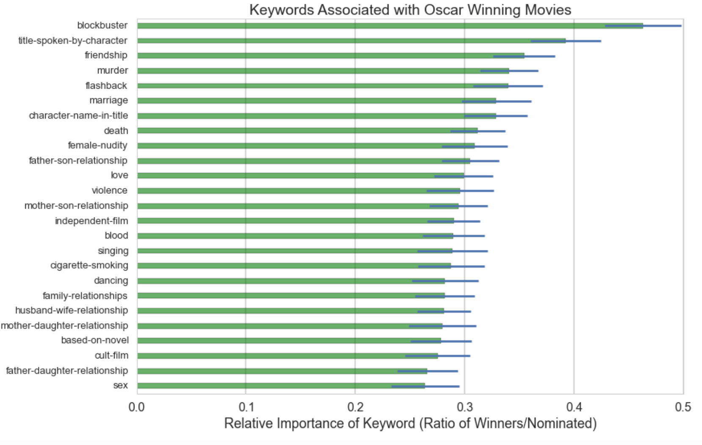
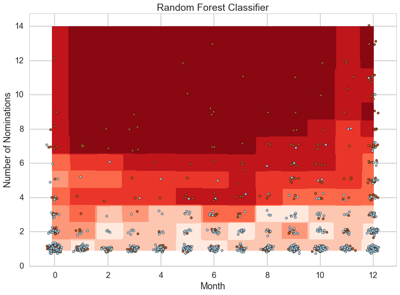

Five Things You Should Know
The 88th Academy Awards airs on February 28th, which means we are counting down the days to find out if Leonardo DiCaprio will finally bring home an Oscar. We’re pretty sure Leo is tired of hearing “better luck next year”, so we wanted to build an Oscar predictor to let him know if he should bother practicing that acceptance speech or not. Actually no, we just wanted to build an Oscar predictor.
So, what does it take to get that golden statue anyhow? We used the IMDb database to find gather as many features as we could on movies that have been nominated for an Oscar, and trained several versions of Oscar predictors using data from 1981 to 2004. For each version, we counted how many times we got it right using data we set aside from the Oscars in 2005 and 2006. This was a good way to see how our final Oscar predictor would fare in future Academy Awards. We finally settled on 'Oscar Predictor 7.0', a model that predicted Oscar outcomes with an 81% accuracy rate. The predictor was built using a Random Forest Classifier, but instead of getting into the nitty-gritty details about what that means, we’ll give you the Buzzfeed version.
Early Birds… Do Not Get The Worm
That’s right, when it comes to winning an Oscar, it seems that given a film is nominated, it will more likely win if released later in the year. According to the Oscar Rulebook (yes, there is such a thing), films must be released by December 31 of the previous year in order to be eligible for the February award show. Seems like filmmakers don’t want to show all their cards too early according to the data. Nominated movies that were released in August, September, November and December won over 30% of the time compared to movies released in May, which won less than 20% of the time. While we cannot say that releasing a movie in December will increase your chances of winning an Oscar, there does seem to be something magical about that time of year.

Speak With a Funny Accent
We also found information about the countries of origin of each movie. Now, the Oscars are an American event, and American films take home the lion's share of the awards. But in terms of percentage of nominated movies that win, two countries stand out: Italy and Spain. Over 40% of nominated movies from Italy take home an Oscar, and Spanish-origin came out to be an important predictor in one of our models. The USA (and other English-speaking countries) didn't fare nearly as well. Bet you regret not paying attention in high school Spanish class now, huh?

Tone Down the Gore (Unless... you know... it's a war film)
IMDb gives a list of keywords and genres associated with a movie. Oscar Predictor 7.0 found that these were pretty helpful in separating the Haves and the Have-Nots. Films with keywords like blood and violence (especially those in the 'Thriller' genre) tend to perform poorly. Yet somehow, war movies do really well in our model. If you find that a bit contradictory, then you can always make a family film or musical. Those also tend to win more than other genres.

Nominated for Best Picture is a Shoe-In
Yeah, so it’s pretty easy to win an Oscar… all you have to do is get nominated for Best Picture. All jokes aside, we found that movies nominated for Best Picture tend to win in at least one category, even if they don’t get to take home the big prize. We figured this is largely because a movie nominated for Best Picture is an all-around good movie, maybe even nominated for several other categories.

But Avoid Being Nominated for Best Cinematography
Oddly enough, there are some categories that, if nominated for, lowers a film’s probability of winning. A couple versions of our Oscar Predictor indicated that filmmakers should avoid being nominated for Best Cinematography, Best Sound Mixing, Best Costume Design if they want a chance at winning an Oscar. These are almost like second tier categories...so one possible theory is that the big guys (the ones that were nominated for Best Picture) were also nominated for these secondary awards. The little guys, who only had one shot at winning an Oscar for having great costumes, has no chance. Bummer.

How did we do it?
Background and Motivation
Winning an Oscar is every filmmaker's dream. As movie buffs and aspiring filmmakers (…just kidding), we wanted to see what it took to win the golden statue. Currently there are 24 categories ranging from Best Picture to Best Sound Editing. We all had our own suspicions of what movie features are associated with winning an Oscar. We set out to find the probability of a film winning an Oscar given it is nominated. More specifically, we wanted to find a classifier that could identify the winners and the losers.
Data Gathering and Processing
We obtained a complete list of all the Oscar nominated films through the 79th Academy Awards in 2006 from ya-shin.com. Although the data came in a csv file, there were several layers of data cleaning involved before being able to analyze the data. We analyzed only the data between 1981-2006, as the categories have remained relatively constant during this period. The data for each movie included the categories the film was nominated for and won. To include features for the films that could be predictive of winning an Oscar, we utilized the IMDbpy package to complete our dataset. IMDbpy is a Python package that contains various movie features from the IMDb database.
The data had a handful of continuous variables such as runtime and month of release date, however the majority of the features were categorical such as genre and keywords. Knowing that sklearn could only accept numerical variables as inputs, we converted all the categorical variables into dummy variables. To reduce the dimensionality, we used only the top categories in our analysis.
Exploratory Data Analysis
We began with exploratory data analysis to identify what variables would be important in building an effective classifier. Grouping the movies by winners and losers, we were able to visually determine if any variables were good separators. For example, a film nominated for Best Picture is more likely to win an Oscar. This makes sense because films nominated for Best Picture tend to be the best movies across all categories. Therefore, even if the movie does not win Best Picture, it is likely to win an Oscar in one or more different categories.
We were also curious to see if keywords could be predictive of Oscar winners. For each of the top 25 keywords, we found the proportion of nominated films that won, which are plotted below. Among the frequent keywords were “blood”, “death”, and “violence”. From EDA, it was difficult to tell which keywords would be helpful in our classifer.
Also, the month of release also seems to be associated with winning. In terms of raw numbers, movies that come out late in the year, especially November and December, receive the most number of nominations and awards. But in terms of percentage of nominated movies that actually win awards, there is no clear-cut best month. August, September, November, and December all seem to have an equally large rate of nominated movies that win big.
Modeling and Results
Since our project was focusing on prediction, we fit a variety of statistical models and tested the performance of each on data from the 2005 and 2006 Oscars (the latest years that we had data for). Ultimately, we found that the machine learning technique called Random Forests performed the best. It predicted Oscar winners for 2005-2006 with an 81% accuracy. This is an improvement from a 71% baseline accuracy (if we predicted all movies to be losers). So although there’s clearly room for improvement, the relative success of our final model indicates that we did capture some of the most important features that make a movie Oscar-worthy.
We used decision surfaces to see how the classifer was deciding who was a winner when it came to month of release and number of nominations. The plot confirms that there are many winners late in the year. The plot also illustrates that the movies released later in the year must receive more nominations to increase probability of winning. However, we suspect that this may be overfitting a few end-of-the-year high performance losers, and further analysis is needed.
Conclusion and Next Steps
Moving forward, we would like to look at predicting what kinds of movies win certain awards (i.e., Best Picture, Best Costume Design, etc.). In order to maximize the amount of data we were working with, our analysis treated each ‘win’ as an equivalent outcome, when this is not in fact the case.
We also felt that we could have improved our accuracy by incorporating the cast into a predictor. Typically Oscar winning movies have a cast full of A-list actors and actresses. Although we developed a way to compute the “star power” for a given movie, it was very computationally intensive, making time the only obstacle from including the cast. This also could have been extended to compute “director power” and “producer power”.